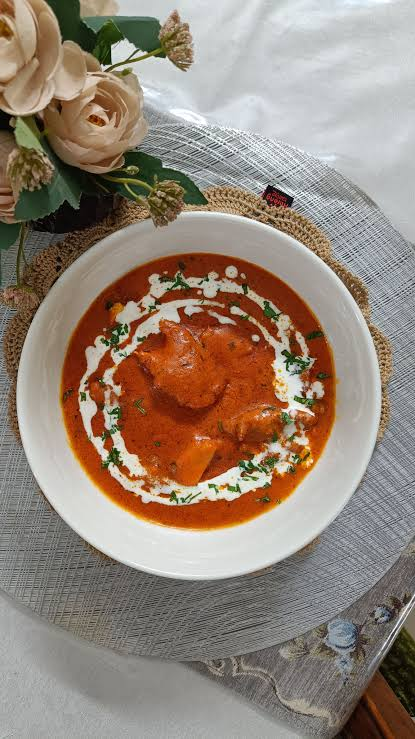

A classic homemade lasagna begins with a rich, savory meat sauce and a creamy cheese filling. To make the sauce, brown ground beef and Italian sausage with diced onions and garlic, then simmer them with crushed tomatoes, tomato paste, and herbs like basil and oregano until thick. In a separate bowl, mix creamy ricotta cheese with grated Parmesan, fresh parsley, and eggs to create a smooth binding layer.
Assemble the dish in a baking pan by spreading a thin layer of meat sauce on the bottom, followed by a layer of lasagna noodles, the ricotta mixture, and shredded mozzarella. Repeat these layers until the pan is full, finishing the top with an extra layer of noodles, remaining sauce, and a generous blanket of mozzarella and Parmesan cheese. Cover the dish with foil and bake at 350°F for 45 minutes, then uncover for 15 more minutes until bubbling and golden, and let it rest before slicing.